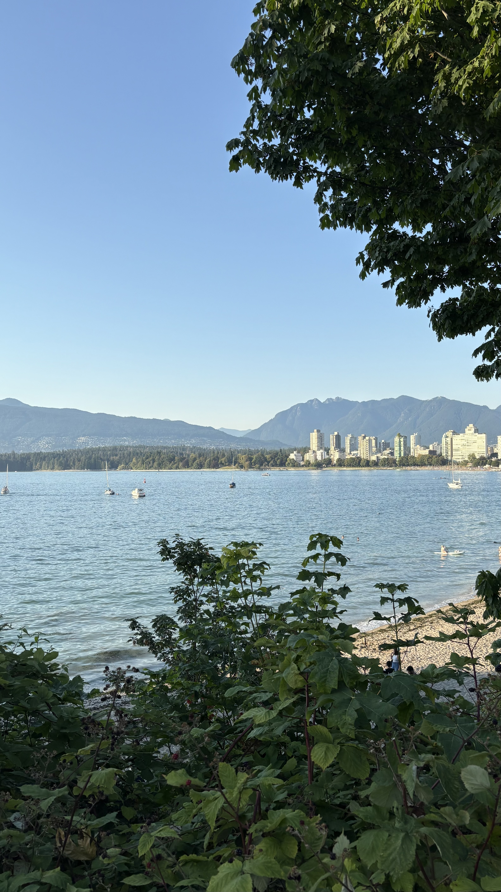

I want to make healthcare more accessible, and use that to change what's possible in someone's life. I'm fascinated by why technology built to help so often goes unused, and I want my research to shape policy so those solutions can actually reach everyone, no matter where they live, what they can read, or what they can afford.
Three projects that shaped how I think about designing for people under strain.
Co-founder & Product Lead
A digital platform pairing peer connection, emotion tracking, and a personalized care guide for postpartum parents. Selected for the University of Waterloo's Velocity Summer Incubator; the roadmap was shaped by 1,000+ survey views and 20+ interviews with healthcare experts and target users.
Final Year Capstone, University of Waterloo
Designed and fabricated a hydrogel using thiolated gelatin and calcium peroxide to support diabetic wound healing. Optimized the formulation through iterative testing and pulse oximetry measurements, sustaining roughly 86% peak oxygen levels over several hours.
SYDE 548, User Research Portfolio
A research portfolio on UWaterloo's engineering course-selection process. Built proto-personas for neurodivergent and international students, ran love-letter/break-up-letter and journey-mapping sessions, and used heuristic evaluation to trace how a fragmented toolset overwhelms students during selection.
Education
Cornell University, Ithaca, NY
University of Waterloo, Waterloo, ON
Experience
Health Design Innovation Lab (HDIL), Cornell University, Ithaca, NY
Allshores Limited, Toronto, ON
Mea (formerly Hera), Waterloo, ON
The Argus Group, Hamilton, Bermuda
The Argus Group, Hamilton, Bermuda
Healthcare Systems RA Inc., Waterloo, ON
Leadership
National Society of Black Engineers, UWaterloo Chapter, Waterloo, ON
Projects
Beyond work
A few stops from the 6 countries so far, on the way to 15 before 30.
